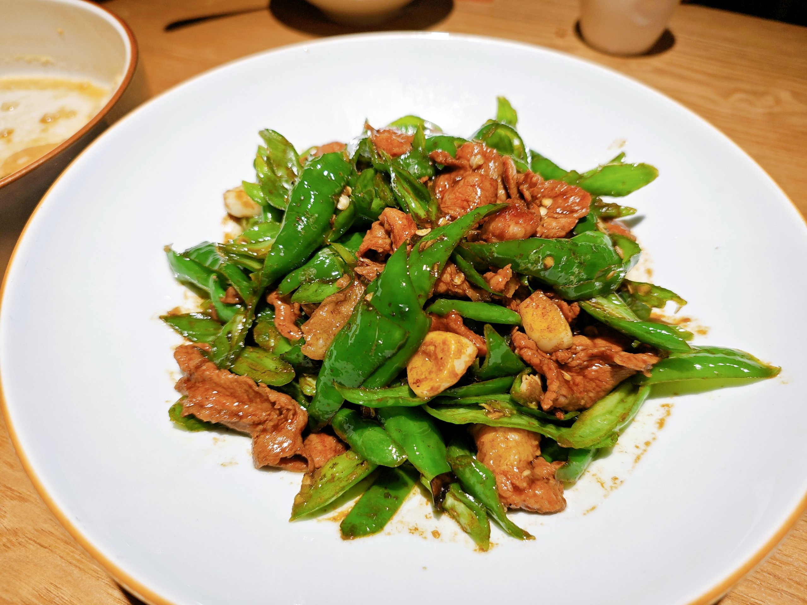

辣椒炒肉

主料 & 配菜：
猪里脊肉/五花肉 200g
青椒（或红椒）2个（约150g）
大蒜 3瓣 / 生姜 2片
调料类：
生抽 1.5汤匙 / 老抽 半汤匙
料酒 1汤匙 / 盐 适量 / 白糖 少许 / 食用油 适量
做法：
1. 猪肉洗净切薄片，加入生抽、料酒腌制10分钟。
2. 青椒去籽切条，大蒜剁末。
3. 热锅凉油，放入姜片、蒜末爆香。
4. 放入肉片中火翻炒至变色后盛出备用。
5. 锅中留底油，放入青椒快炒1分钟，加少许水焖半分钟。
6. 倒回肉片一起翻炒均匀。
7. 加老抽调色，加盐、少许白糖提鲜，翻炒几下即可出锅。